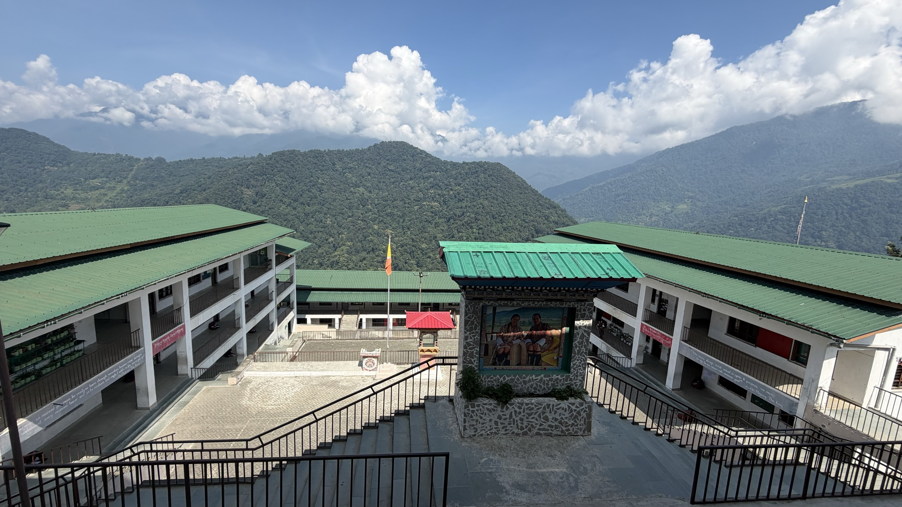

“Empowering students to become compassionate global citizens who excel academically, think critically, and embrace diversity, while fostering a culture of lifelong learning, innovation, and social responsibility.”
About Us

✳ A community that helps every learner flourish
Who we are
A school with
heart and purpose.
Arekha Middle Secondary School (school code AREKHA) is located in Arekha, Bongo, Chhukha, Bhutan. The school was established in 2004.
Serving Arekha and surrounding communities, the school is committed to accessible, quality education and to nurturing responsible, capable and compassionate citizens.
Meet our school community
CuriosityKindnessResponsibility
- School code
- AREKHA
- Established
- 2004
- Principal
- Karma Wangchuk
- Location
- Arekha, Bongo, Chhukha, Bhutan
Our direction
Vision & Mission
The principles that guide learning and growth at Arekha Middle Secondary School.
Our Mission
- Empower students to become compassionate global citizens, fostering academic excellence, critical thinking, and an appreciation for diversity.
- Nurture compassionate leaders through fostering empathy, cultivating social-emotional growth, and promoting impactful community service.
- Provide equitable access to diverse educational opportunities, cater to individual needs, and foster a sense of belonging for all learners.
- Equip students with essential skills, knowledge, and values to become active citizens and sustainable societal leaders.
- Forge strategic partnerships for educational innovation, uniting stakeholders to shape a brighter future for our nation through continuous improvement.
Our journey
The story of
Arekha Middle Secondary School.
Key milestones in the school’s development and leadership.
-
2004
School established
Arekha Middle Secondary School began serving the educational needs of Arekha and its surrounding community.
-
2016
Upgraded to Middle Secondary School
The upgrade enabled students from Arekha and nearby communities to continue their education up to Class X locally, improving access to secondary education.
-
2016–2019
First Principal after the upgrade
Mr. Tshering Dorji served as the school’s first Principal following its upgrade. During his tenure, the school built foundations in academic learning, student discipline and holistic development, including educational exposure programmes for high-achieving students.
-
2020–present
Continuing the school’s development
Mr. Karma Wangchuk assumed the role of Principal in 2020. The school continues to strengthen academic standards and student well-being, while supporting co-curricular and extracurricular programmes, values education, environmental conservation, scouting, sports, cultural preservation and community engagement.
Today, Arekha Middle Secondary School is committed to providing quality education in a safe, inclusive and nurturing environment. Guided by the principles of Gross National Happiness and the vision of the Ministry of Education and Skills Development, the school aims to help learners develop the knowledge, skills, values and character to contribute meaningfully to the nation.